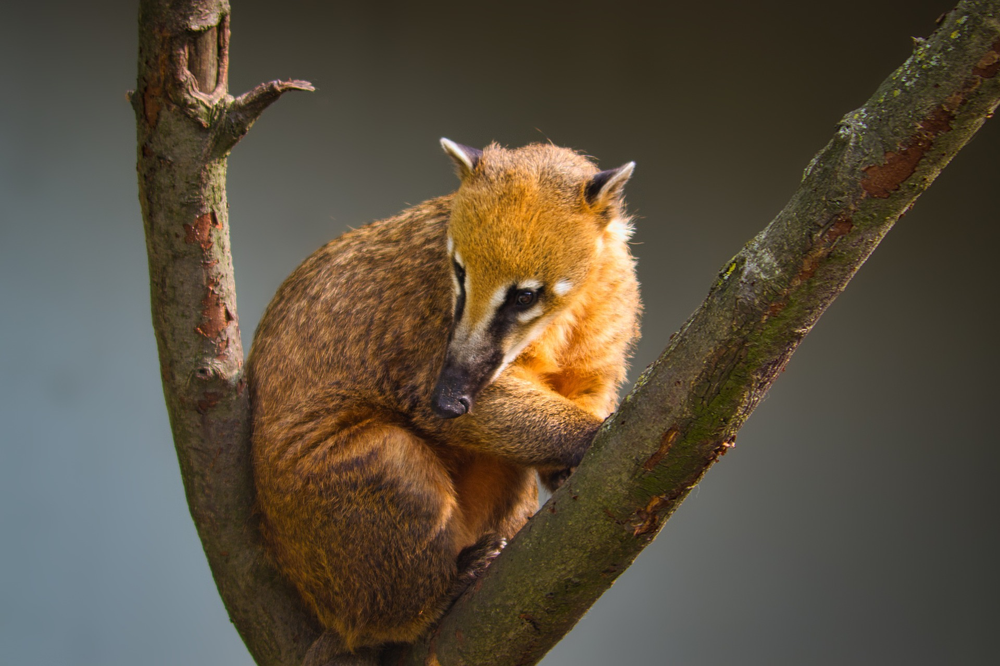
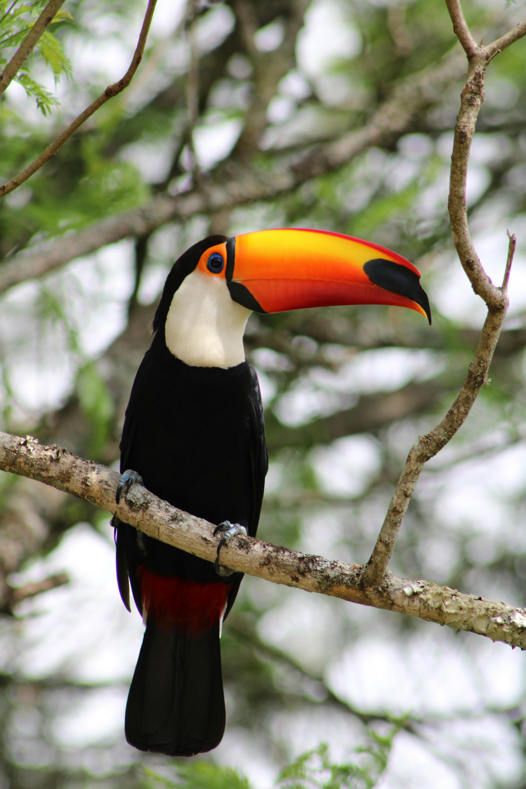
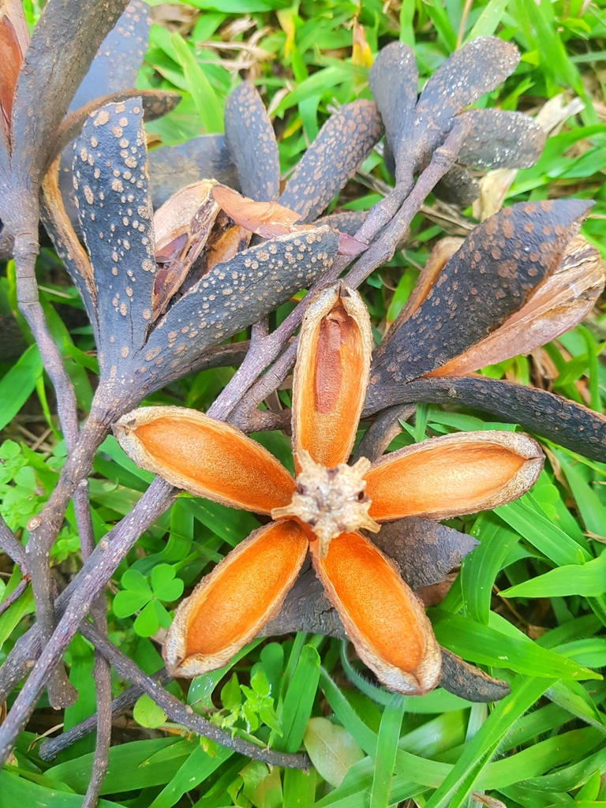
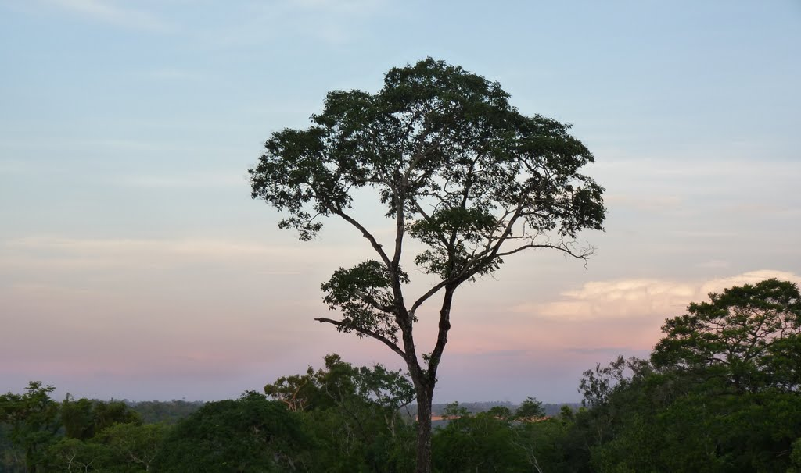
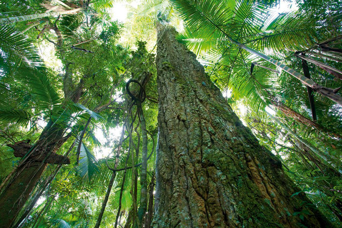

fauna

COATI
Iguazu coatis are omnivorous mammals native to South America. They are recognized for their long, ringed tails and feed on fruits, insects, and small animals. They live in social groups in wooded areas and are common in the vicinity of Iguazu Falls. Although they are not endangered, they face threats such as habitat loss and poaching.

MONO CAI
The red howler monkey, or red howler, is a South American primate known for its reddish fur and powerful howls. It lives in tropical forests, feeds on leaves and fruits, and spends most of its time in trees. Although it is not endangered, its habitat faces threats from deforestation.

TUCAN GRANDE
The great toucan is a tropical bird with bright colors and a large, striking beak. It lives in the humid forests of Central and South America, feeding on fruits and occasionally insects. Its long and colorful beak is characteristic and serves to regulate its body temperature and as a tool for capturing food.
flora

CEDRO MISIONERO
The Misiones cedar is a large tree mainly found in the Gran Chaco region and the Atlantic rainforest of South America. It is valued for its ornamental beauty and its importance in conserving biodiversity in its natural habitat. However, deforestation and indiscriminate logging have led to its decline in some areas, raising concerns for its conservation.

LAPACHO
The lapacho is a South American tree known for its beautiful colorful flowers and durable wood. It is valued in gardening for its ornamental value and in traditional medicine for its healing properties. It is native to tropical and subtropical regions of South America and is a symbol of resilience and beauty in the region.

PALMITO
The Iguazu palm is a species of palm tree endemic to the region of the Iguazu Falls in South America. It stands out for its unique beauty and ecological importance as part of the subtropical rainforest ecosystem. However, it faces threats due to deforestation and unsustainable exploitation. Its conservation is crucial for preserving the unique biodiversity of the region.